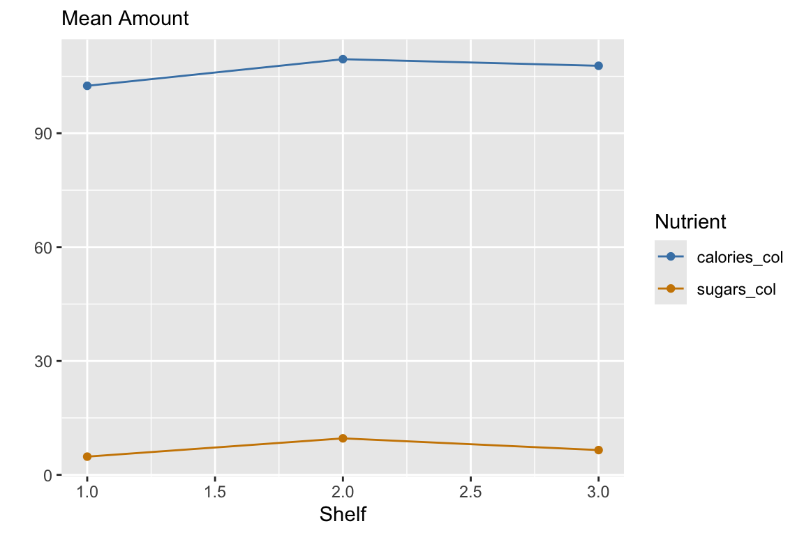

Data Wrangling II
DATE
Today we will…
- New Material
- Extend
dplyrverbs to have more functionality. - Data pivots.
- Extend
- PA 7: Military Spending
Extending dplyr verbs
Reminder: Example Data Cereal
Error:
! object 'cereal' not foundMore dplyr
We have already covered a lot, but not everything you might want…
Today we will cover functions that help with the following tasks:
- extract a variable as a vector
- simple frequency table of a categorical variable
- creating a categorical variable from levels of a quantitatie variable
- applying slice to groups and multiple variables
- mutating or summarizing many variables at once
pull()
What is the mean potassium for cold cereals? 🧩
- You can’t use the
$operator in a pipeline pull()to the rescue!pull()extracts a data frame column as a vector
Reminder: count with summarize()
How many cereals does each manuf have in this dataset?
Count with count()
How many cereals does each manuf have in this dataset?
if_else()
For each cereal, label the potass as “high” or “low”.
One if-else statement:
if_else(<CONDITION>, <TRUE OUTPUT>, <FALSE OUTPUT>)
case_when()
For each cereal, label the amount of sugar as “low”, “medium”, “high”, or “very high”.
Summarize multiple columns
For each type of cereal, calculate the mean nutrient levels.
SO MUCH COPY-PASTE!
There are 9 different nutrient columns in the dataset! There has to be a better way…
Summarize multiple columns with across()
For each type of cereal, calculate the mean nutrient levels.
Error:
! object 'cereal' not foundSo much better!
Summarize multiple columns with across()
Within the summarize() function, we use the across() function, with two arguments:
.cols– to specify the columns to apply functions to..fns– to specify the functions to apply.
Use lambda functions: \(x) <FUN_NAME>(x, <ARGS>)
(also called anonymous functions)
Summarize multiple columns with across()
- To choose columns, you can use the same options as with
select()
For each type of cereal, calculate the means of all numeric variables.
If you are struggling with across()
Break it down:
- think about what the code would be for one column
- replace the column name with the placeholder
xand add\(x)in front for the.fnsargument. You have created a lambda function!
- think about which columns you want to apply this to for the
.colsargument
across(): Related Functions
These functions are used with filter() to select rows based on a logical statement applied to multiple columns
if_any()– returns a logical vector (one element for each row) that isTRUEif the logical statement is true for any column in the supplied columnsif_all()– returns a logical vector (one element for each row) that isTRUEif the logical statement is true for all columns in the supplied columns
if_any() Example
Remember, you got warnings in PA3 when converting some columns to numeric? If you look at the original data, you can see this is because missing values were indicated with the string "NULL". 🧩
| INSTNM | CITY | STABBR | ZIP | ADM_RATE | SAT_AVG | UGDS | TUITIONFEE_IN | TUITIONFEE_OUT | CONTROL | REGION |
|---|---|---|---|---|---|---|---|---|---|---|
| Alabama A & M University | Normal | AL | 35762 | 0.9027 | 929 | 4824 | 9857 | 18236 | 1 | 5 |
| University of Alabama at Birmingham | Birmingham | AL | 35294-0110 | 0.9181 | 1195 | 12866 | 8328 | 19032 | 1 | 5 |
| Amridge University | Montgomery | AL | 36117-3553 | NULL | NULL | 322 | 6900 | 6900 | 2 | 5 |
Using kable() for formatting in labs
- When printing rows of a data frame or tibble
- need to load the
knitrpackage at the beginning of your file kable()outputs a markdown version of your data- should only be used to nicely format data you are printing
Pivots
Creating Tidy Data
Let’s say we want to look at mean cereal nutrients based on shelf.
- The data are in a wide format – a separate column for each nutrient.
| name | manuf | type | calories | protein | fat | sodium | fiber | carbo | sugars | potass | vitamins | shelf | weight | cups | rating |
|---|---|---|---|---|---|---|---|---|---|---|---|---|---|---|---|
| 100% Bran | N | cold | 70 | 4 | 1 | 130 | 10.0 | 5.0 | 6 | 280 | 25 | 3 | 1 | 0.33 | 68.40297 |
| 100% Natural Bran | Q | cold | 120 | 3 | 5 | 15 | 2.0 | 8.0 | 8 | 135 | 0 | 3 | 1 | 1.00 | 33.98368 |
| All-Bran | K | cold | 70 | 4 | 1 | 260 | 9.0 | 7.0 | 5 | 320 | 25 | 3 | 1 | 0.33 | 59.42551 |
| All-Bran with Extra Fiber | K | cold | 50 | 4 | 0 | 140 | 14.0 | 8.0 | 0 | 330 | 25 | 3 | 1 | 0.50 | 93.70491 |
| Almond Delight | R | cold | 110 | 2 | 2 | 200 | 1.0 | 14.0 | 8 | -1 | 25 | 3 | 1 | 0.75 | 34.38484 |
| Apple Cinnamon Cheerios | G | cold | 110 | 2 | 2 | 180 | 1.5 | 10.5 | 10 | 70 | 25 | 1 | 1 | 0.75 | 29.50954 |
Creating Tidy Data
Discussion
How would we plot the mean cereal nutrients by shelf (as shown below) with the wide data using ggplot2?

Transforming the data will make plotting much easier
Creating Tidy Data
| shelf | calories | protein | fat | sodium | fiber | carbo | sugars | potass | vitamins |
|---|---|---|---|---|---|---|---|---|---|
| 1 | 102.5000 | 2.650000 | 0.60 | 176.2500 | 1.6850000 | 15.80000 | 4.800000 | 75.50000 | 20.00000 |
| 2 | 109.5238 | 1.904762 | 1.00 | 145.7143 | 0.9047619 | 13.61905 | 9.619048 | 57.80952 | 23.80952 |
| 3 | 107.7778 | 2.861111 | 1.25 | 158.6111 | 3.1388889 | 14.50000 | 6.527778 | 129.83333 | 35.41667 |
Code
my_colors <- c("calories_col" = "steelblue", "sugars_col" = "orange3")
cereal_wide |>
ggplot() +
geom_point(aes(x = shelf, y = calories, color = "calories_col")) +
geom_line(aes(x = shelf, y = calories, color = "calories_col")) +
geom_point(aes(x = shelf, y = sugars, color = "sugars_col")) +
geom_line(aes(x = shelf, y = sugars, color = "sugars_col")) +
scale_color_manual(values = my_colors, labels = names(my_colors)) +
labs(x = "Shelf", y = "", subtitle = "Mean Amount", color = "Nutrient")
| shelf | Nutrient | mean_amount |
|---|---|---|
| 1 | calories | 102.5000000 |
| 1 | carbo | 15.8000000 |
| 1 | fat | 0.6000000 |
| 1 | fiber | 1.6850000 |
| 1 | potass | 75.5000000 |
| 1 | protein | 2.6500000 |
| 1 | sodium | 176.2500000 |
| 1 | sugars | 4.8000000 |
| 1 | vitamins | 20.0000000 |
| 2 | calories | 109.5238095 |
| 2 | carbo | 13.6190476 |
| 2 | fat | 1.0000000 |
| 2 | fiber | 0.9047619 |
| 2 | potass | 57.8095238 |
| 2 | protein | 1.9047619 |
| 2 | sodium | 145.7142857 |
| 2 | sugars | 9.6190476 |
| 2 | vitamins | 23.8095238 |
| 3 | calories | 107.7777778 |
| 3 | carbo | 14.5000000 |
| 3 | fat | 1.2500000 |
| 3 | fiber | 3.1388889 |
| 3 | potass | 129.8333333 |
| 3 | protein | 2.8611111 |
| 3 | sodium | 158.6111111 |
| 3 | sugars | 6.5277778 |
| 3 | vitamins | 35.4166667 |
Data Layouts